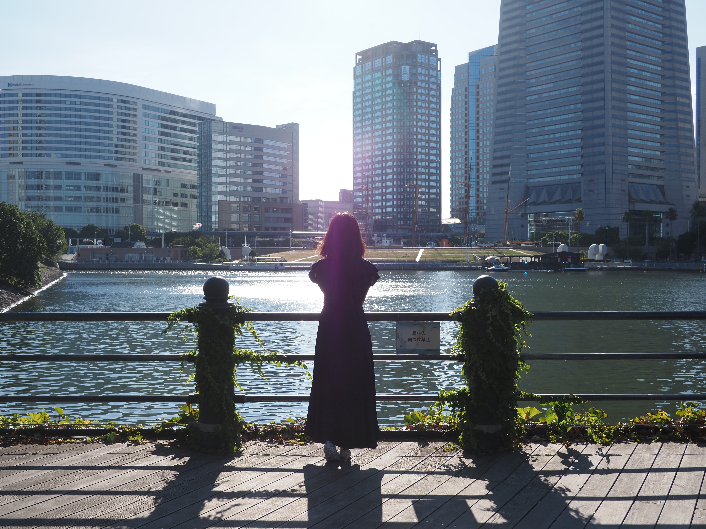

Lunchette(ランシェット)とはスズランの“らん”という音とフランス語で鈴を意味する“クロシェット”を掛け合わせたサロン名です。
スズランの花言葉 …再び幸せが訪れる…今がどんなにつらくても必ず幸せになれる。そんなメッセージをサロン名に込めました。
当サロンは自分の内面と向き合いありのままの自分を受け入れしなやかに生きるためのメンタルヘルスケアを提供しています。
セラピストとともに心の声に耳を傾け傷を癒していくことで自分らしい輝きを取り戻しませんか？
※当サロンは医療機関ではございません。病気の診断や薬の処方等をご希望の方は精神科・心療内科の受診をお願いいたします。